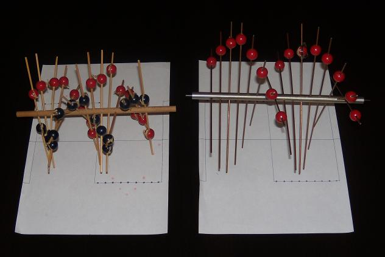
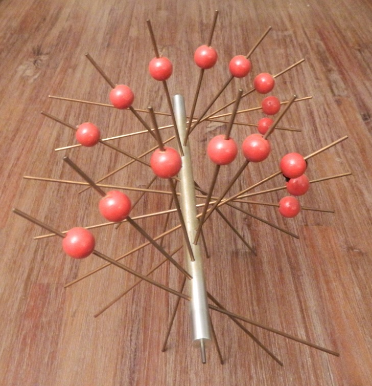
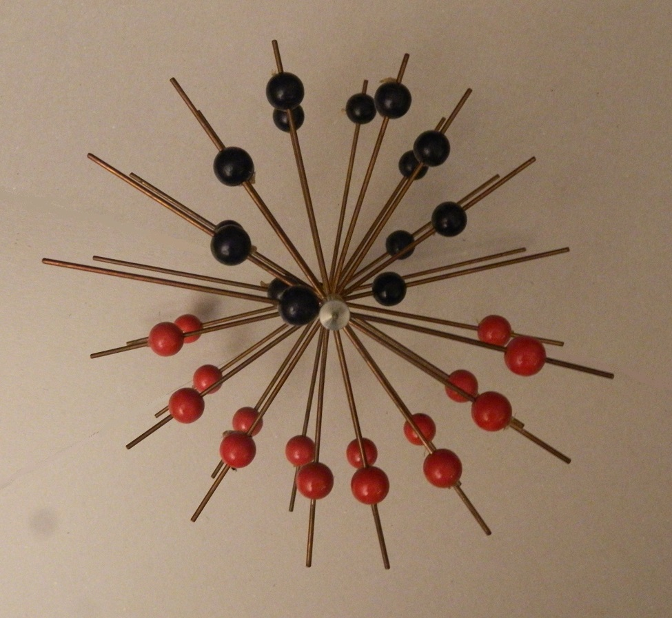

The Helix is possibly the most simple mechanical device for finding the harmonic amplitudes and phases of periodic signals.
It is a cylindrical axis with a number of perpendicular rods sticking through, constructed in such a way that the
rods spiral a full rotation across the axis' length (shaped like a DNA structure).
The photo above shows a proof-of-concept model on the left side, and a more accurate model on the right, machined by
Tatjana J. van Vark.
Just like Lord Kelvin's Harmonic Analyzer, Michelson's Harmonic Analyzer and Henrici's Harmonic Analyzer, the Helix determines the Fourier coefficients of the Fourier series.
Usage : finding the first harmonic
Usage : finding the second harmonic
The current design is not very accurate, especially when needing to determine the higher order harmonics. A more accurate design would have a larger number of rods, or would consist of a set of Helix constructions (one for each harmonic to analyze), where the axis of each Helix can be connected to the axis of another Helix.
An improved design: the Variable Helix Harmonic Analyzer
A better design would be one that has many freely rotating rods. The recording process would be much easier. Recording would be done in a single pass, with all rods' angles set to 0, creating flat set of rods, like an abacus. Then for each harmonic to analyse, apply a 360 degree rotation to the rods, evenly spread across the axis, and determine the rest-weight in each case.
Tim Samshuijzen
2006
Just like Lord Kelvin's Harmonic Analyzer, Michelson's Harmonic Analyzer and Henrici's Harmonic Analyzer, the Helix determines the Fourier coefficients of the Fourier series.
Usage : finding the first harmonic
-
Print the graph of the signal of interest onto a sheet of paper where the period of the signal is the same width as the distance between the rods on the Helix's axis.
It is assumed that the positive area of the signal is equal to the negative area of the signal.
-
The Helix's rods can each hold a "slider". A slider is a red or blue spherical weight.
Start off with an empty Helix, i.e. all sliders removed.
-
Position the Helix above the graph so that its axis runs along the graph's x-axis.
-
While looking down from above the Helix, "record" the signal as follows:
For each of the Helix's rod, from left to right along the x-axis:
- Twist the Helix's axis such that the rod is parallel to the graph's plane.The result will be a red slider on each rod, added to the Helix after turning a full period.
- Find the position where the rod intersects the signal.
- Add a red slider to the rod and slide it to this position.
The photo below shows the result after "recording" a square wave.
Notice that the red sliders are all on one side of the Helix, with equal distances from the axis.

-
Next, hold the Helix at each end and let it rotate freely, allowing gravity to do its work until the heavier side points down.
Result - the phase: The angle between the resulting heavier bottom side and the bottom side of the starting position is the phase of the first harmonic (phase added to the sine).
Note that the phase of the first harmonic of the square wave is zero, which is what we would expect because the first harmonic is a pure sine. If the phase were 90 degrees, then the harmonic would be a pure cosine.
-
Now the tricky part:
- Pick up the Helix, lift to eye-height and look down the Helix's axis, keeping the heavier side at the bottom.
- Position a blue slider on each rod such that it forms a circle (when looking down the axis) on the top side (the lighter side), making sure the edge of the circle crosses the axis.
- Resize the blue circle in such a way that it balances exactly the rest-weight of the red sliders on the other side, such that the Helix can rotate freely without weight-bias.
Result - the amplitude: The diameter of the resulting circle is the amplitude of the first harmonic.
The photo below shows the result after finding the first harmonic of a square wave.
 
Note that the amplitude of the first harmonic (the diameter of the circle of blue sliders) is slightly larger than the amplitude of the square wave. This is as we would expect, because the theoretical ratio is 4 / π = 1.2732...
- Synthesis: Once you have found the balanced configuration as described above, while twisting the Helix above the x-axis (one full turn for the first harmonic), record the harmonic onto the graph paper by marking where the blue markers (from left to right) are above the graph when the rod is flat above the paper.
-
Join the marked dots on the graph and there you have it: the first harmonic!
The final result should look something like the situation in the left side of the above photo.
Usage : finding the second harmonic
Method 1
As described above, except in step 4: twist with twice the rate while crossing the graph, twisting 720 degrees for one period. Note that you will need twice as many sliders (red and blue), and that it may be difficult to position the sliders correctly.
Method 2
Use two Helix constructions, joined at the axes. Then proceed as described above, except in step 4: twist a full 720 degrees for one period. While doing so you will need to shift the Helix half a slide-distance towards the left after adding each slider.
Method 3
In step 6, use variable weights instead of blue sliders to more simply determine the amplitude and phase for each half of the period (separate measurements), and then combine the resulting weights for finding the resulting amplitude and phase. The latter alternative is useful if you just want to know the amplitude and phase, without the need for synthesis.
Method 4
Construct a more flexible Helix, where all the rods can be turned freely around the axis. For determining the second harmonic, simply evenly arrange all the rods so that it turns a full 720 degrees over the axis. With this construction it is desired to have a large number of rods, for accuracy. The advantage of this construction is that it is a more general construction, and can even be used to determine the constant term.
As described above, except in step 4: twist with twice the rate while crossing the graph, twisting 720 degrees for one period. Note that you will need twice as many sliders (red and blue), and that it may be difficult to position the sliders correctly.
Method 2
Use two Helix constructions, joined at the axes. Then proceed as described above, except in step 4: twist a full 720 degrees for one period. While doing so you will need to shift the Helix half a slide-distance towards the left after adding each slider.
Method 3
In step 6, use variable weights instead of blue sliders to more simply determine the amplitude and phase for each half of the period (separate measurements), and then combine the resulting weights for finding the resulting amplitude and phase. The latter alternative is useful if you just want to know the amplitude and phase, without the need for synthesis.
Method 4
Construct a more flexible Helix, where all the rods can be turned freely around the axis. For determining the second harmonic, simply evenly arrange all the rods so that it turns a full 720 degrees over the axis. With this construction it is desired to have a large number of rods, for accuracy. The advantage of this construction is that it is a more general construction, and can even be used to determine the constant term.
The current design is not very accurate, especially when needing to determine the higher order harmonics. A more accurate design would have a larger number of rods, or would consist of a set of Helix constructions (one for each harmonic to analyze), where the axis of each Helix can be connected to the axis of another Helix.
An improved design: the Variable Helix Harmonic Analyzer
A better design would be one that has many freely rotating rods. The recording process would be much easier. Recording would be done in a single pass, with all rods' angles set to 0, creating flat set of rods, like an abacus. Then for each harmonic to analyse, apply a 360 degree rotation to the rods, evenly spread across the axis, and determine the rest-weight in each case.
Tim Samshuijzen
2006